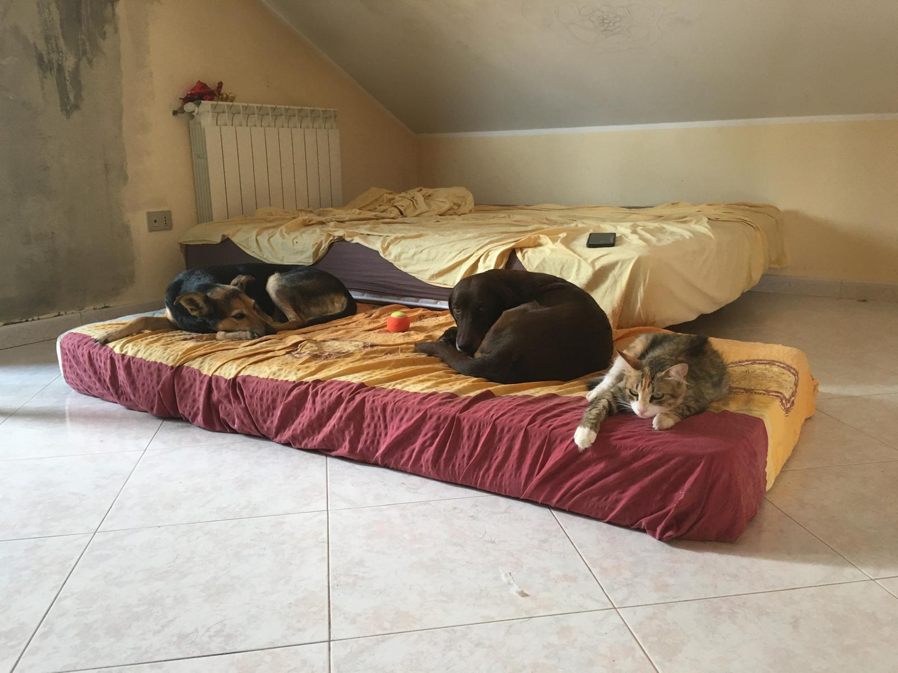
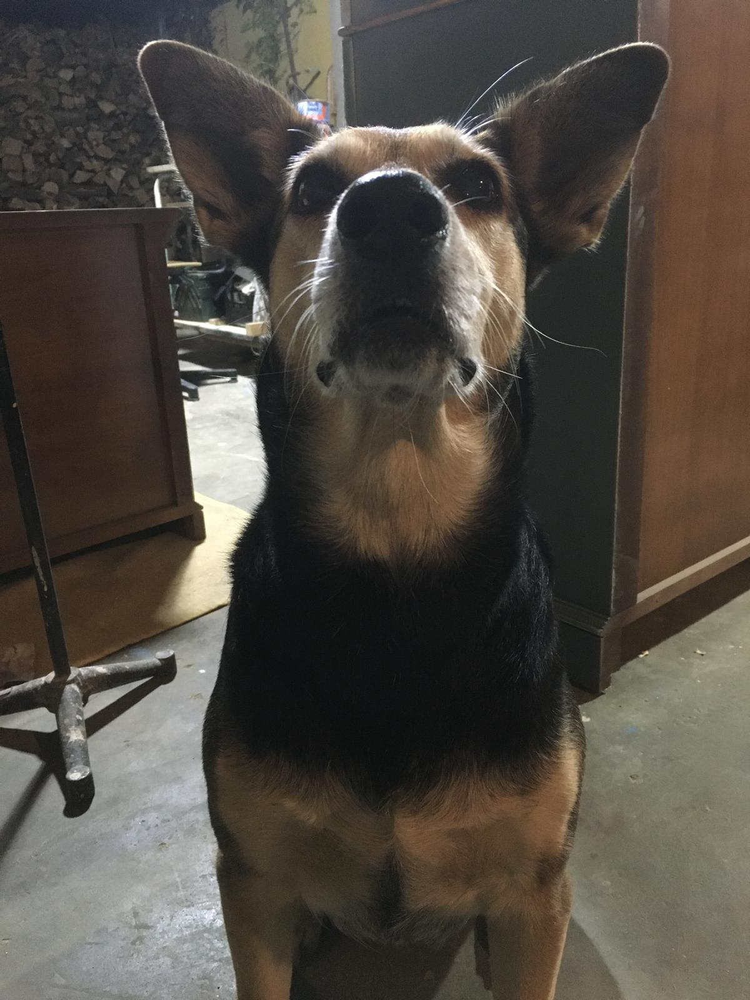
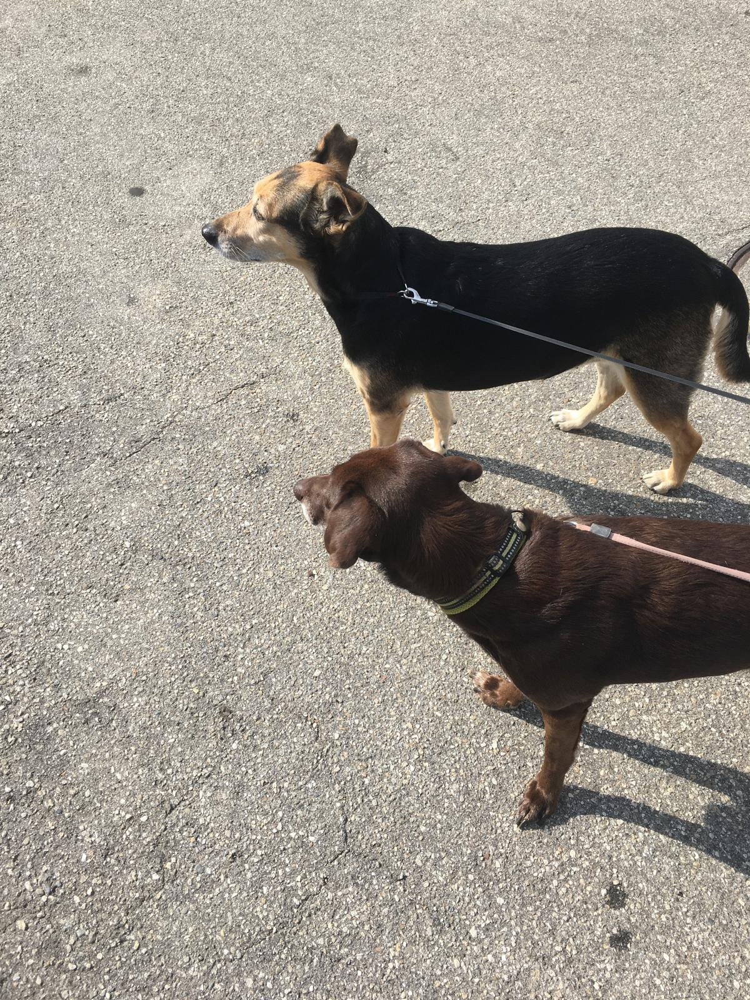
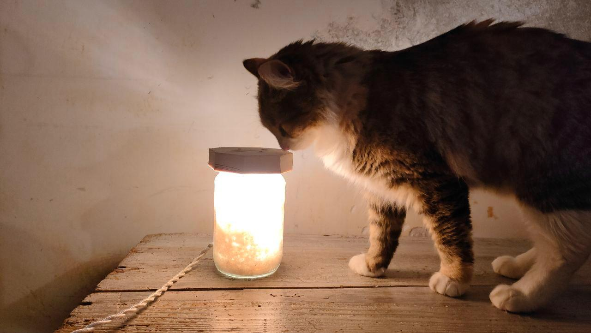

Scenografia
Il Giardino dei Ciliegi
Spazio teatrale costruito con assi di recupero e veli di iuta. Teatro Nuovo, 2023.
Legno. Ferro. Ruggine. Memoria.
Scopri i lavori
"Ogni oggetto porta una storia.
Il mio lavoro è ascoltarla."
Scenografa di formazione, con gli anni ho sviluppato una pratica che travalica i confini del set: recupero mobili, travi, lamiere abbandonate e riporto in essi la dignità del tempo vissuto.
Lavoro con le mani. Con la ruggine che impregna le dita. Con il legno che odora di decenni lontani. Ogni intervento — che sia una scenografia, un mobile, un muro — è un atto di ascolto e trasformazione.

Spazio teatrale costruito con assi di recupero e veli di iuta. Teatro Nuovo, 2023.

Mobile in castagno del '900 riportato a nuova vita con cera nera e ottone ossidato.

Intervento pittorico su parete grezza. Intonaco scalfito, ferro bruciato, calce. Abitazione privata, Milano.
Piano in lamiera saldata e gambe in ferro forgiato. Recupero industriale, uso domestico.
Installazione scenografica con elementi sospesi in ferro arrugginito. Festival delle Arti, 2024.
Trattamento sperimentale su superficie in rame. Residenza artistica privata, Cittanova.
Non solo oggetti: trasformo gli spazi dove vivete. Un muro può diventare memoria. Un angolo dimenticato, racconto.
Lavoro con voi, ascoltando la storia dell'ambiente e di chi lo abita. Ogni intervento è unico, irripetibile.
Prima di toccare i materiali, ascolto. L'oggetto, lo spazio, la persona che li abita.
Studia la materia: le vene del legno, il grano della ruggine, la memoria del ferro.
Il lavoro manuale. Lento, fisico, onesto. Senza scorciatoie.
L'oggetto ritorna nel mondo con la propria storia intatta — e una nuova.
Hai un oggetto da recuperare, uno spazio da trasformare, una scenografia da immaginare? Scrivimi.